~ ハードウェアインテグレーション ~
大阪大学 中島優作
ロボットってどうやって設置するの？ 手先はどうやって付けるの？
あまり学ぶ機会がないハードウェアの当たり前をまとめました
■ 機械 ■ 電気 ■ 通信 ■ デバイス
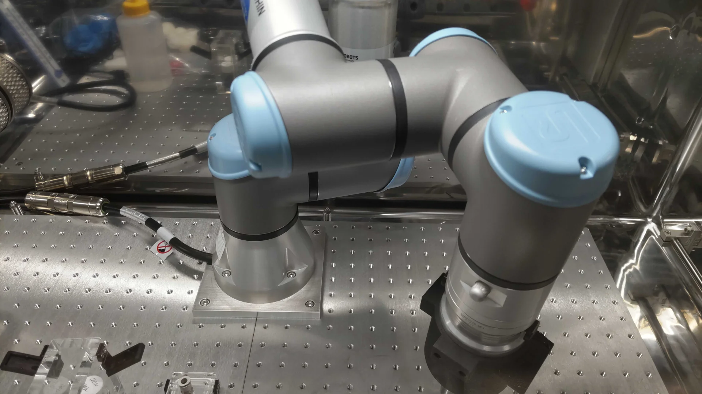
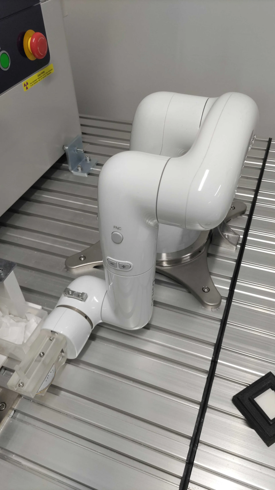
ロボットアームはアルミフレームか定盤に固定するのがほとんど
アルミフレームの強度計算 ↓
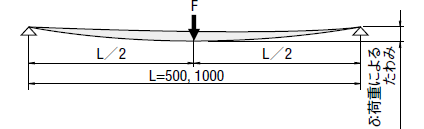
フレームがたわむと、ロボットの動作精度が落ちる
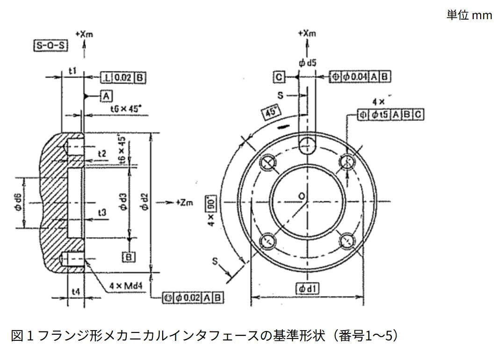
手先のフランジはISO 9409-1 / JIS B 8436 で寸法が決まっている
PCの LAN ポート（または USB-LAN 変換）とロボットを直結し、IP アドレスを設定する
IPアドレスの仕組み ↓
IPアドレス＝機器の番号、サブネットマスク＝ネットワーク部とホスト部の境目
ネットワーク部が同じ機器どうしが直接通信できる
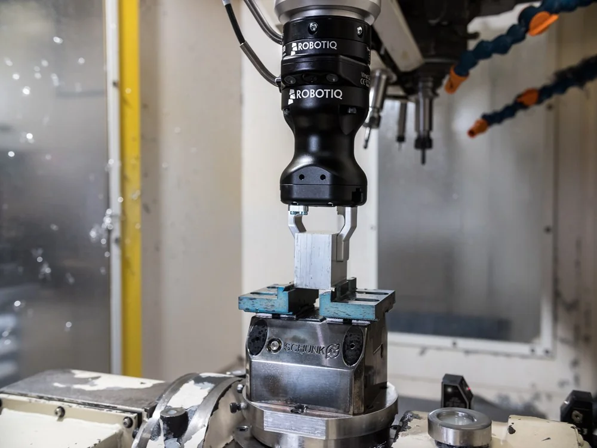
メーカー対応品以外は、通信などを自分で実装する必要がある
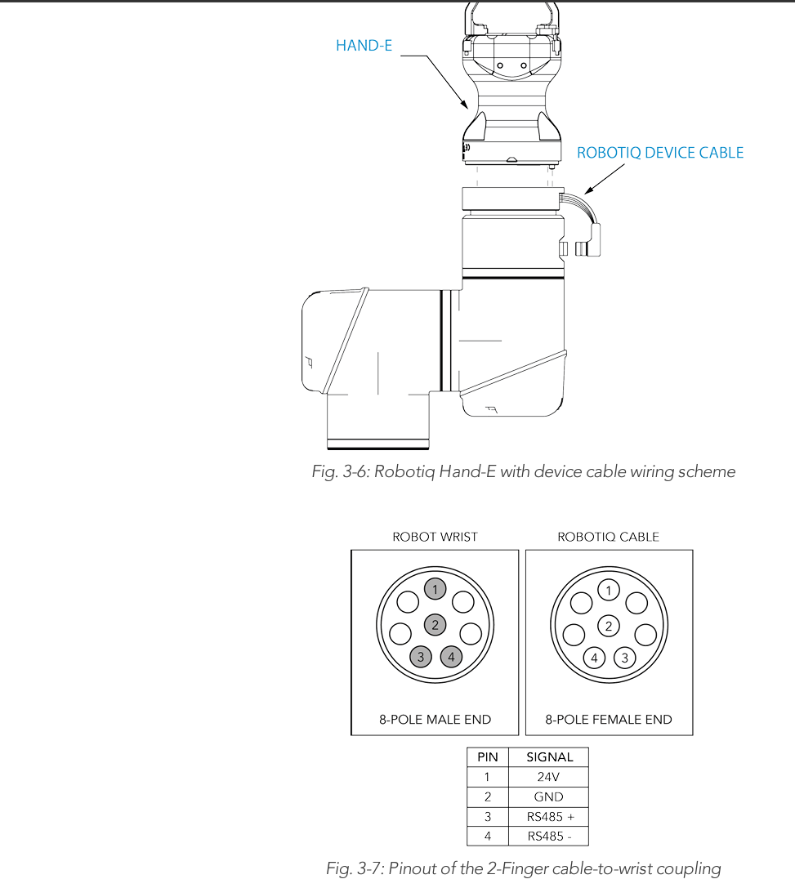
Robotiq Hand-E とユニバーサルロボットの接続例（ケーブル1本）
推奨電源 ↓ 通信方式 →
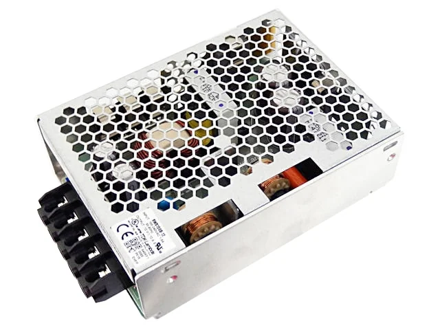
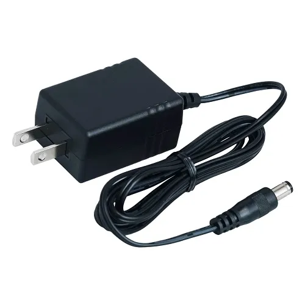
モーターを動かすなら誘導性負荷に対応した電源を選ぶ
ACアダプタが故障する理由 ↓
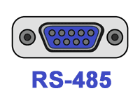
グリッパや外部機器との通信では RS485 がよく使われる
RS485 の基礎 ↓
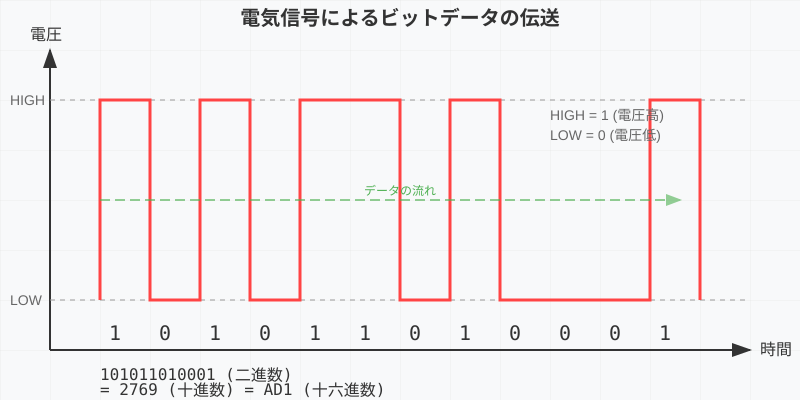
'A' = 65 = 0100 0001
RS232：1本の線と GND の電位差で送る → ノイズに弱い
RS485：2本の線の差（差動信号）で送る → ノイズに強く、今はこちらが主流
USB-RS485 変換アダプタの選定 ↓
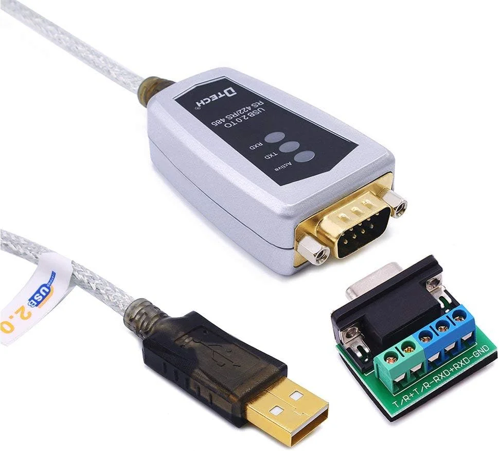
PC とは USB-RS485 変換アダプタでつなぐことが多い
非常停止は b接点（押すと回路が切れる）を2系統持つ 2b接点が大抵のロボットで使われる
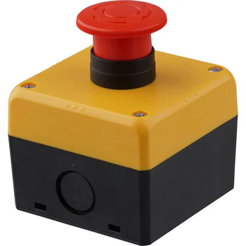
スイッチ単体も売っているが、BOX入りが便利
治具＝ワークを決まった位置・姿勢に固定する道具
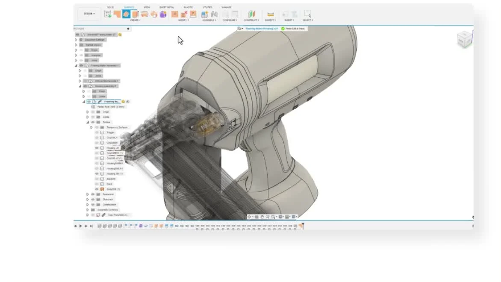
Fusion 360 は CAD 初心者にも使いやすい
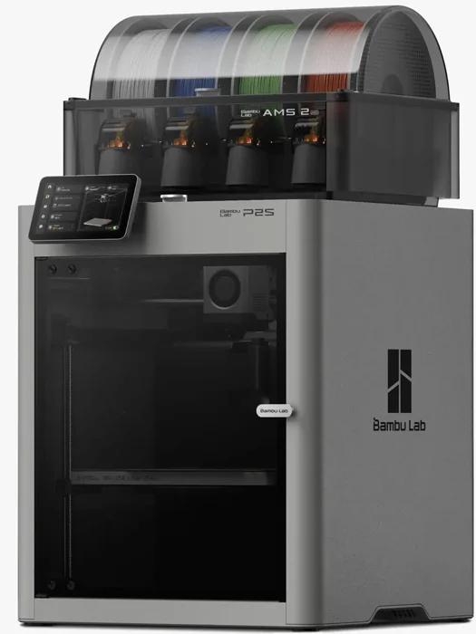
3Dプリンタで作れる
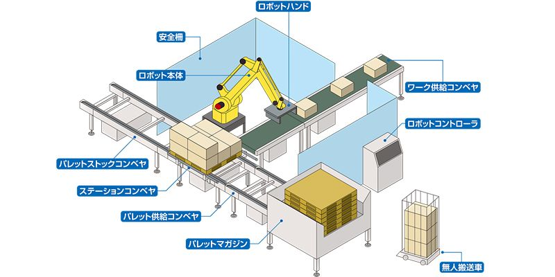
ロボット単体ではなく、色々な装置をつないで使う
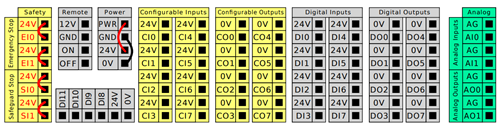
PC からロボットを動かすなら、PC にまとめてつなぐのが手軽
高い信頼性が要る産業用途では PLC ＋ FA 用の通信
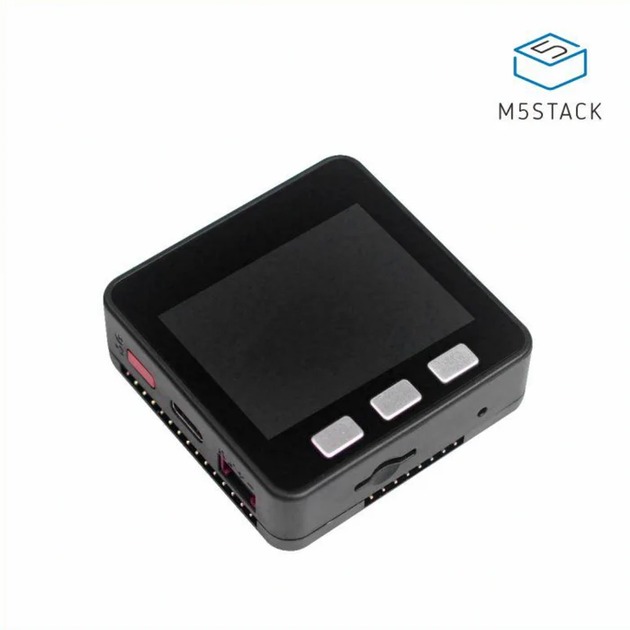
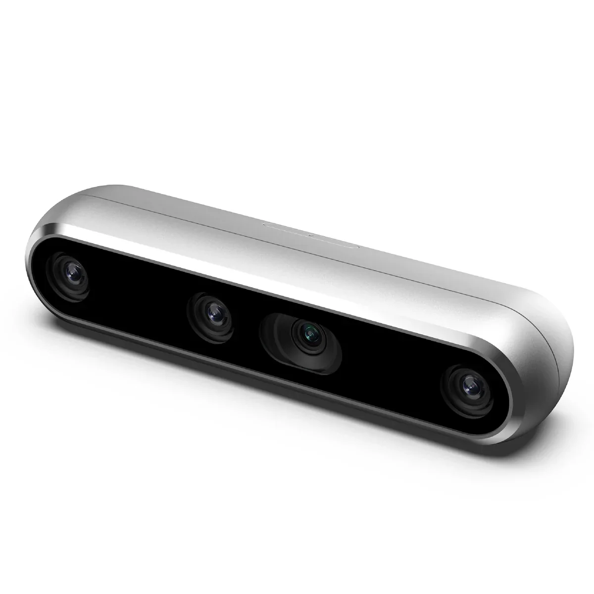
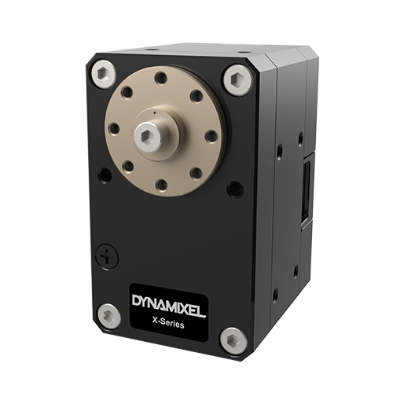
それぞれ ↓
Arduino のプログラムを書けるマイコン
安価で高性能な Intel 製の 3Dカメラ
ロボットアームの関節などに使われるモーター